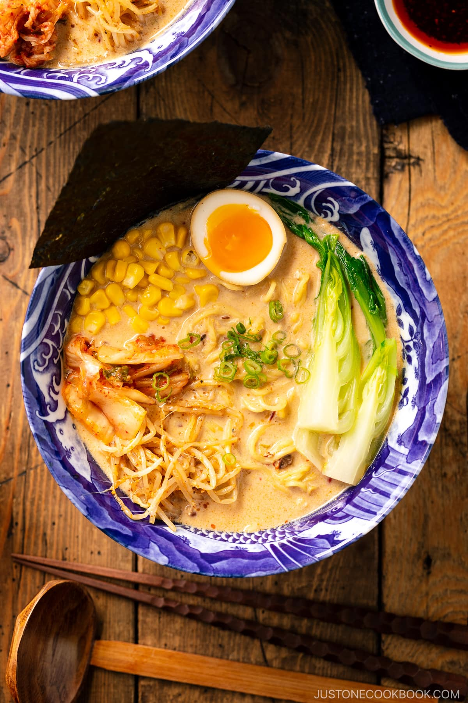

Vegetable Ramen

Description: A cozy bowl of homemade vegetable ramen,
loaded with fresh veggies and savory broth. Healthy and comforting!
Ingredients
- 2 ramen noodle blocks
- 4 cups vegetable broth
- 1 tbsp sesame oil
- 2 garlic cloves (minced)
- 1 tsp ginger (grated)
- 1 cup mushrooms (sliced)
- ½ cup carrots (julienned)
- ½ cup baby spinach
- 1 tbsp soy sauce
- Green onions & sesame seeds for garnish
Steps
- Heat sesame oil, sauté garlic and ginger.
- Add mushrooms and carrots; cook 3–4 minutes.
- Pour in vegetable broth and soy sauce, bring to a simmer.
- Add ramen noodles and cook until tender.
-
Stir in spinach, then serve topped with green onions and sesame seeds.